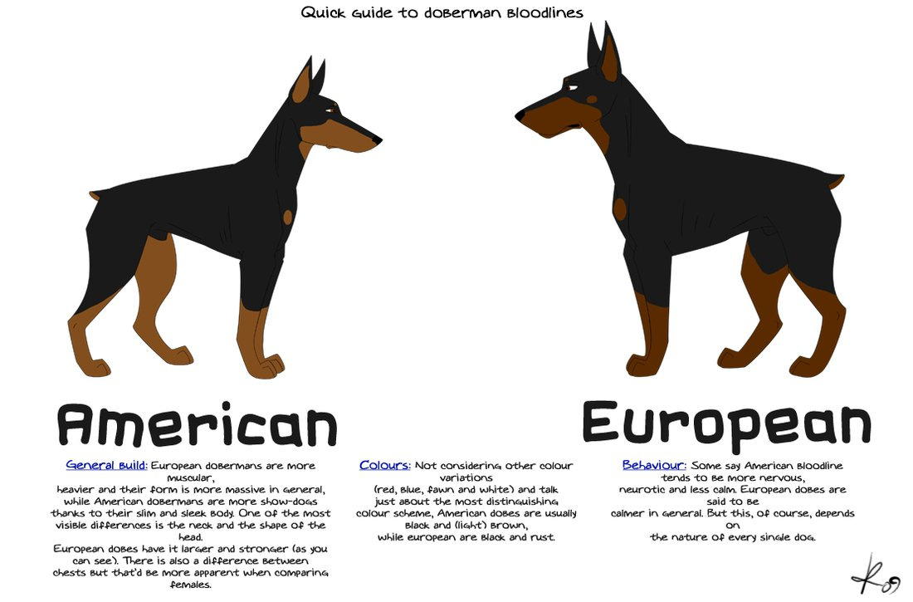

North American vs. European Dobermans
The Doberman Pinscher was developed in Germany in the 1860s, created by a German tax collector named Louis Dobermann. Dobermann had to travel frequently through bandit-infested areas, and decided to develop a watchdog and bodyguard capable of handling any situation that might arise. Dobermans are large dogs with a compact muscular body.
They are very intelligent and energetic with tremendous strength and stamina. Dobies like to be with their people and thrive on human interaction and leadership. They are loyal, tolerant, dedicated and affectionate with the family. Determined, bold and assertive while working, they are very adaptable, highly skilled and versatile. Dobermans are very easy to train and make outstanding watch and guard dogs that do not need additional protection training.
This breed is not for everyone. They need mental stimulation and a lot of daily exercise as well as consistent training. Doberman Pinschers have many talents including tracking, watchdog, guarding, police work, military work, search and rescue, therapy work, competitive obedience, agility and IPO/Schutzhund.

Another notable difference is in temperament. The Doberman was originally bred to be a protection dog so they had to be courageous, fearless, loyal and intelligent. Today, many European Dobermans still possess these working characteristics and excel not only in the show ring, but also in sporting rings, such as IPO/Schutzhund (tracking, obedience and personal protection). In contrast, very few North American Dobermans are successful at achieving IPO titles. The European Doberman is stable around children, family members and non-threatening strangers. Yet, when the need arises, they will be protective and defend boldly.